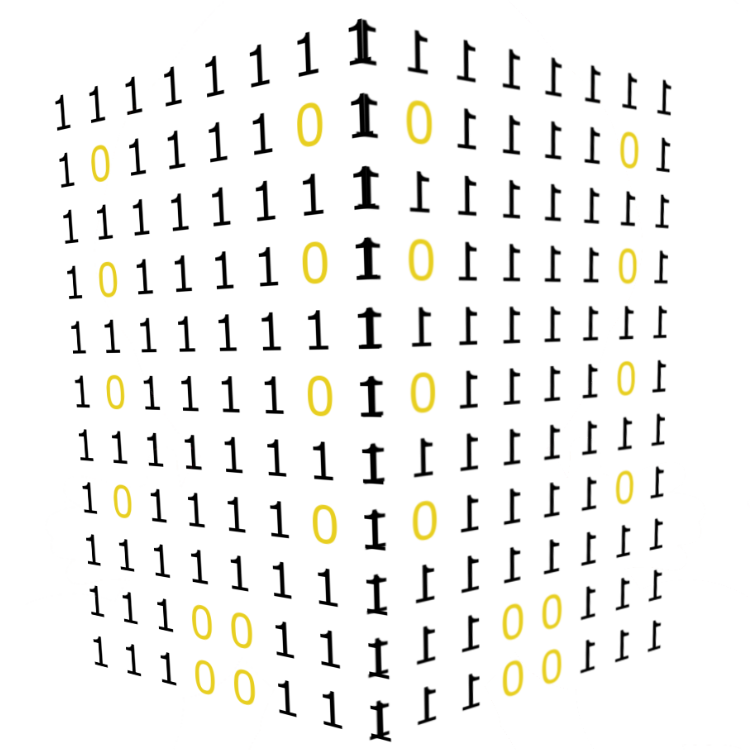
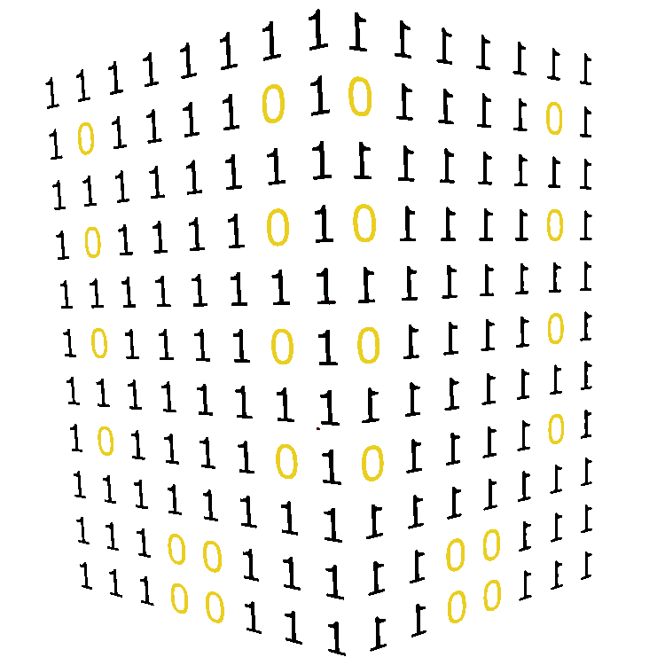

Your building, by the numbers.

Minimum viable simulation from whatever information you happen to have lying around, so you can start asking questions, generating reports, and saving energy and money long before you ever integrate a single sensor or pull a single cable.
Most of the building data space works backwards: install the sensors, pull the wires, pile up the data, stand up a dashboard, and wait for someone to ask a question. By the time anyone does, the answer is buried in a heap nobody can make sense of.
The Numerical Engine starts from the other end. Feed it whatever you already have — a description, a spec sheet, a retrocommissioning report, a few utility bills — and it builds a minimum viable simulation of your building. From day one it flags cost and usage anomalies, raises the right operational questions, and proposes avenues worth exploring.
When something looks promising, you add live data at your own pace. The simulation tunes itself to reality as it arrives, sharpening every insight, capital plan, and ECM proposal along the way.
From that minimum viable simulation, the engine starts asking the questions that actually matter.

It looks like you have single‑pane windows. Is that right?
Estimated window U‑value — right where single glazing lives.
We're also seeing signs of low ΔT syndrome. How clean are your coils?
Modeled chilled‑water supply vs. return — only ~8°F apart.
We need more data to be sure.
Connect your BMS data →When a question is worth answering, you wire in live data — at your own pace.
… and the engine turns those questions into decisions.
You're a strong candidate for vacuum insulated glass.
Low ΔT syndrome confirmed. Based on your answers, energy valves are worth a look.
Explore →Let the engine grow with you — don't buy what you don't need.
Start without pulling a single wire. We work with the utility data and documents you already have on hand to stand up our flagship decision engine and energy management system, powered by a minimum viable simulation of your site.
$2,000 / site / year
Pair real-time data and strategically integrate and deploy sensors to get a better-tuned simulation, a view into the live physics of your site, and meatier operational insights and capital plans.
$8,000 / site / year
We live for the hard problems at the intersection of data, energy, and building physics. If you have a problem with an interesting shape that doesn't quite fit and requires some imagination, reach out.
Our principles are simple: work with what you have, and add data strategically.
Buildings are real, not virtual. Your problems are real, not virtual. Software should do its best to reflect the truth on the ground.
A product shouldn't take your time or your attention. You shouldn't even have to log in. Every interaction should be guided by a single core question:
What do you want to know?